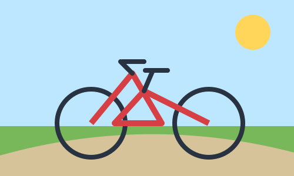
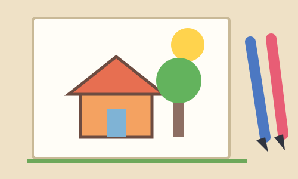
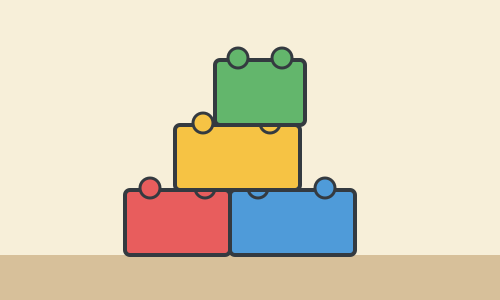
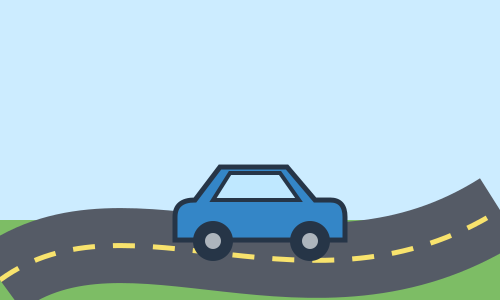

Hobbies
Riding My Bicycle

I remember riding my bicycle around the neighbourhood with my friends after school.
Learning to ride without training wheels made me feel proud and independent.
Drawing Pictures

I enjoyed drawing colourful houses, trees, and imaginary characters on rainy afternoons.
My favourite part was showing my family the pictures and hearing their encouraging comments.
Toys
Building Blocks

I spent hours using building blocks to create tall towers, houses, and pretend cities.
I especially enjoyed the challenge of rebuilding a tower after it fell down.
Toy Cars

I used to race my toy cars across the floor and make roads out of books and cardboard.
Choosing the fastest car for each race always felt very important to me.